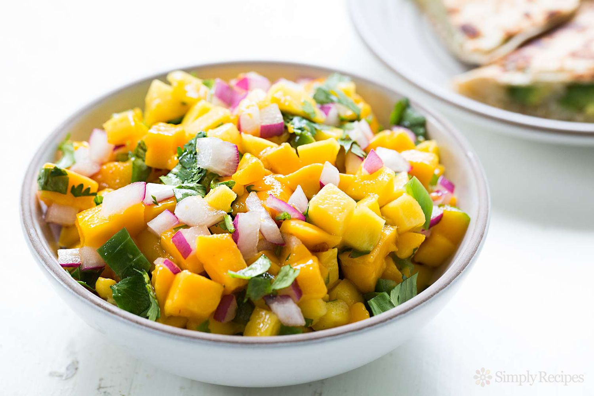
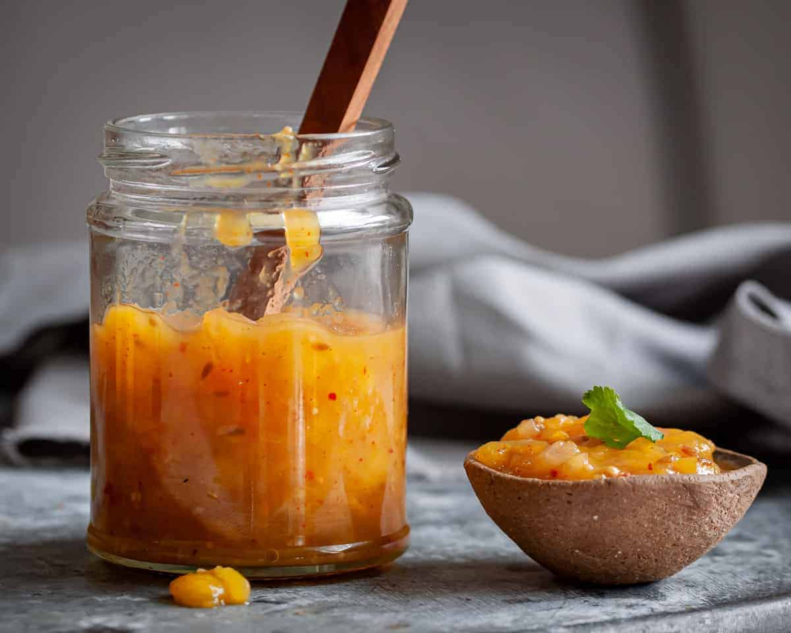

Fresh Mango Salsa
A Fresh Mango Salsa recipe that's so good it's the first salsa to run out. It's easy to make and made with simple and natural ingredients so you can feel good about eating it. When in season, go for the mangos and stay fresh! Variations are provided in the recipe notes for best taste and texture.
- 2 mangoes, diced and skin removed
- 1 cucumber, cored and diced (or substitute with red bell pepper)
- 1/2 red onion, diced
- 3 Roma tomatoes, cored and diced
- Juice of 2–3 limes
- Salt to taste
- Optional: cilantro and/or serrano peppers
Ingredients:
- Chop or dice all ingredients as recommended.
- Combine all ingredients in a large bowl and mix by folding over ingredients [avoid mashing], and do not over mix. Add salt to taste.
Instructions:
Mango Sticky Rice

Mango sticky rice is the most famous Thai dessert, and for good reason! If you never thought fruit and rice would go together, this will blow your mind. Sweet sticky rice pairs unexpectedly well with sweet and juicy fresh mangoes. It's loved the world over, and is arguably the Thai national dessert.
- 1 cup white glutinous rice, see notes 1 and 2
- ⅔ cup coconut milk
- ½ teaspoon table salt
- ½ cup sugar
- ½ cup coconut milk
- ¼ teaspoon table salt
- 1 teaspoon rice flour
- 1 Tablespoon water
- 2 Tablespoons shelled and split mung beans
- 3 sweet, ripe mangoes
Ingredients:
- If you want to make colourful rice, first prepare the soaking water using instructions in the blog post above.
- Wash the rice by placing it in a mixing bowl and covering it with cold water. Vigorously swish the rice with your hand to release loose starch. Pour off the cloudy water and repeat the process 4 more times or until the water runs mostly clear.
- Soak the rice with room temperature water for at least 4 hours and up to overnight. If you're using naturally dyed water to soak the rice, refrigerate the rice after 4 hours of soaking if you're not yet ready to steam.
- While the rice is soaking, make the salted coconut sauce and the crispy mung beans (below).
- Drain the rice very well, shaking off excess water in a sieve until there is no more dripping. Line a steamer rack with moist muslin (not soaking wet!) or a thin white tea towel and place the rice on the cloth. Fold the edges of the cloth over the rice, making sure the rice doesn't cover the entire rack—there should be space around the rice to allow steam to come up.
- While the rice is cooking, make the coconut syrup. Combine the coconut milk, sugar, and salt in a small pot. If you have a pandan leaf handy, tie it into a knot and throw it in for extra aroma. Cook it over medium heat, and as soon as it starts to bubble, turn off the heat and cover. You will need to reheat this once the rice is ready.
- Few minutes before the rice is done, reheat the syrup so it is steaming hot then keep covered. When the rice is done, immediately place the rice into a mixing bowl and pour the syrup over the rice. Stir to break up any lumps, then cover with a lid, a plate, or aluminum foil and let sit for 20 minutes.
- After 20 minutes, use a rubber spatula to fold the bottom part of the rice up to the top to help redistribute the syrup, and let sit for at least another 20 minutes or until ready to serve. At this stage, the rice will keep at room temp all day.
- Stir the rice flour into the water until there are no more lumps.
- Combine the rice flour slurry, coconut milk, and salt in a small pot. Cook over medium-high heat, stirring constantly, until the mixture comes to a boil.
- Remove from heat and pour into a bowl. Let cool completely before serving.
- Rinse the beans in cold water and add them to a small pot. Cover with about 2 cups of water.
- Over medium heat, bring the water to a simmer. Once simmering, immediately remove from the heat and cover the pot for 10 minutes ONLY. Do not over-soak.
- Drain off the cooking water and rinse the beans in cold water. Lay the beans on a paper towel to dry.
- In a lightly greased sauté pan, toast the beans over medium-high heat, stirring frequently until the beans are dry, crunchy, and start developing a light golden colour.
- Let cool on a plate. This can be kept in an airtight container for up to 1 month.
Instructions:
Mango Chutney
One of the better things about the scorching Indian summer season is that it is blessed with the ‘king of fruits,’ a.k.a mango. Apart from enjoying raw mango with black salt or red chili powder, this Mango Chutney is another way to relish this seasonal fruit, a favorite amongst all ages. This is a quick, vegan Bengali style Mango Chutney recipe with a distinct taste.
- 2 mangoes – semi ripe and juicy, medium-sized
- ½ teaspoon Panch Phoron or equal mix of cumin seeds, fennel seeds, mustard seeds/carom seeds/radhuni seeds (wild celery seeds), nigella seeds/onion seeds and fenugreek seeds
- 2 tablespoons powdered jaggery or as required – adjust as per the sweetness of the mangoes
- 1 tablespoon peanut oil or any neutral oil
- ½ to 1 inch ginger – grated or finely chopped
- ¼ teaspoon red chili powder or cayenne pepper or paprika
- 1 pinch Garam Masala
- 1 pinch asafoetida (hing) – optional
- Salt as required
Ingredients:
- Rinse the mangoes a few times in water. Wipe dry with a kitchen towel. Peel and finely chop them. Set aside. Note that if the mangoes are very juicy and fibrous, you can just remove the pulp.
- Heat oil in a small to medium-sized frying pan or skillet. Keep heat to a low. Add the panch phoron spices and stir. Let them splutter and crackle but make sure they do not get burnt.
- Now, add the ginger and fry for a few seconds till its raw aroma goes away.
- Add the finely chopped mango or mango pulp/puree.
- Add the red chili powder, garam masala powder, and asafoetida. Stir and mix.
- Simmer for 1 to 2 minutes. Add the powdered jaggery or sugar, salt. Mix and cook for 2 to 3 minutes.
- Don't overcook as the mixture will become thick.
- Remove the chutney in a bowl. Serve Mango Chutney warm or at room temperature as dip or spread.